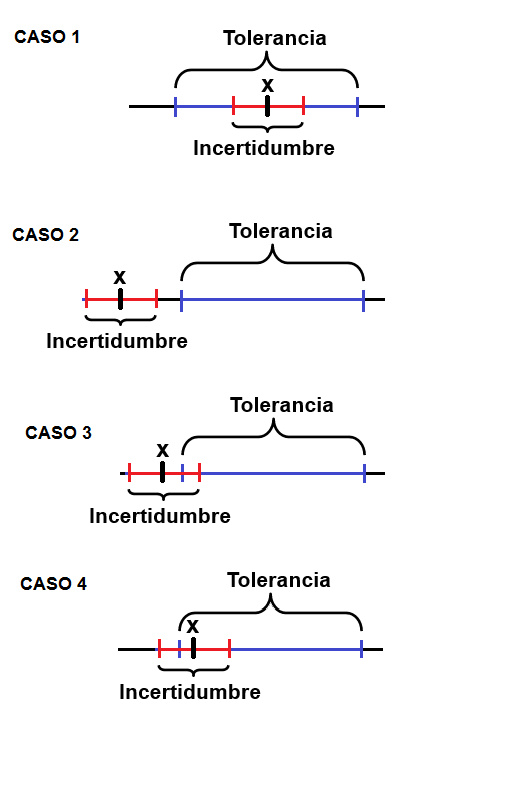
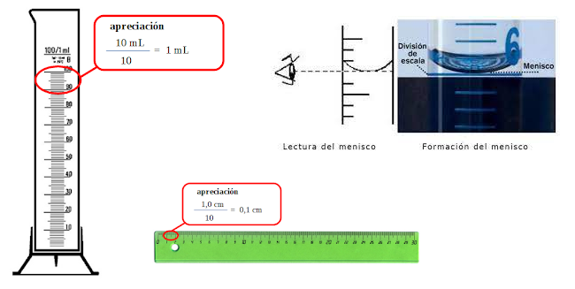

Parámetro asociado al resultado de una medición que caracteriza la dispersión de los valores que podrían ser atribuidos al mensurando, (ISP, 2010)
Es el intervalo de los valores posibles de una medida.
Las medidas llevan asociado un error desconocido; al que se le asigna una cota superior, llamada incertidumbre.
\[medida ± incertidumbre \]
Incertidumbre
Tolerancia (de una magnitud)
Es el intervalo de valores en el que debe encontrarse una magnitud para que se acepte como válida.

\[Intervalo \quad toleracia \geq error+incertidumbre\]
El resultado de una medición suele ser un número expresado como múltiplo de una unidad de medida.
Ejemplo
En un experimento se ha medido la gravedad, obteniendo como resultado \((9,51 ± 0,45) m/s^2\), esto da a entender que:
No se puede asegurar que el valor de la gravedad sea \(9,51 m/s^2\)
Se puede afirmar que hay un margen de error de \(0,45 m/s^2\), ya sea por exceso o por defecto.
Incertidumbre absoluta
Dada una medida experimental de una magnitud, a, y una incertidumbre absoluta, \(u_a\); el valor verdadero, A, debe estar contenido, con razonable certeza, dentro del siguiente intervalo:
\[a-u_a\leq A \leq a+ u_a \]
Incertidumbre relativa
Es el cociente entre la incertidumbre absoluta y el valor de la medida, es una cantidad adimensional que nos informa de la precisión de la medida. Suele expresarse (multiplicándola por 100) como porcentaje.
\[\frac{u_a}{a}\] Apreciación
Es la menor variación de la medida que podemos registrar con dicho instrumento. En los instrumentos con escala, la apreciación es el valor entre dos divisiones consecutivas; por ejemplo una probeta de 25,0 mL tiene una apreciación de 0,5 mL.
Incertidumbre en medidas reproducibles
Cuando al realizar una serie de medidas de una misma magnitud se obtienen los mismos resultados, no se puede concluir que la incertidumbre sea cero; lo que sucede es que los errores quedan ocultos ya que son menores que la incertidumbre asociada al aparato de medición.
En este caso, puede establecerse un criterio simple y útil: cuando las medidas son reproducibles, se asigna una incertidumbre igual a la mitad de la división más pequeña del instrumento, la cual se conoce como resolución.
Por ejemplo, al medir con un instrumento graduado en mililitros repetidas veces el volumen de un recipiente se obtiene siempre 48.0 ml, la incertidumbre será 0.5 ml.

Lo que significa que la medición está entre 47.5 a 48.5 ml, a éste se le conoce como intervalo de confianza de la medición y su tamaño es el doble de la incertidumbre. Esto generalmente se aplica cuando se trata de aparatos de medición tales como reglas, transportadores, balanzas, probetas, manómetros, termómetros, etc
Incertidumbre en medidas no-reproducibles
Cuando se hacen repeticiones de una medida y estas resultan diferentes, con valores \(x_1, x_2,...,x_N\), surgen las preguntas:
¿Cuál es el valor que se reporta?
¿Qué incertidumbre se asigna al valor reportado?
La respuesta a estas preguntas se obtiene a partir del estudio estadístico de las mediciones,promedio y desviación estándar.
Para una medida repetida la incertidumbre está dada por:
\[u=\frac{ sd}{\sqrt n}\]
Regla 1
La incertidumbre aproximada de un valor se puede estimar como la mitad del rango posible de valores, es decir es la semiamplitud del intervalo.
Ejemplo 1
Una distancia se encuentra entre los valores (25,15−25,05)m=0,10 metros. La mitad de este intervalo es de 0,05 m. Entonces la distancia es d = 25,1 m, con una incertidumbre de 0,05 m. La incertidumbre proporcional es:
\[\frac{0,05}{25,1}=0.2\%\]
Intervalo en forma absoluta
\[25.1 \pm 0.05\] Intervalo porcentual
\[25.1 \pm 0.2 \%\] Ejemplo 2
El tiempo de llegada de los corredores de una carrera se encuentra entre los valores 3.4 y 3.6 min. La mitad de este intervalo es de 0,2 m. Entonces el tiempo t=3.5 min, con una incertidumbre de 0,1 min. La incertidumbre proporcional es:
\[\frac{0,1}{3.5}=2.8\%\]
Intervalo en forma absoluta
\[3.4 min \pm 0.1min\] Intervalo porcentual
\[25.1 \pm 2.8 \%\]
x y y se miden con incertidumbre ∆x y ∆y respectivamente
se calcula una función \(z=f(x,y,...)\)
Propagación de errores
Conjunto de reglas que permiten asignar un error a z, conocidas las incertidumbres de x e y, …
Permiten asignar un error al resultado final.
Indica la importancia relativa de las diferentes medidas directas.
Planificación del experimento.
En la suma y diferencia
Si se utilizan para calcular la diferencia q = x − y o la suma q = x + y, entonces la incertidumbre asociada a la variable q es la suma de las incertidumbres asociadas, es decir:
\[∆q = ∆x + ∆y\]
cuando se combinan dos variables mediante una suma o una resta, las incertidumbres siempre se suman. Ejemplo:
\[(62 ± 0.01) + (1.7± 0.1) = 63.73± 0.11\]
En la multiplicación o división
El error relativo del producto es igual a la suma de los errores relativos:
\[q=xy\quad q= \frac{x}{y}\]
\[\frac{∆q}{q}= \frac{∆x}{x}+\frac{∆y}{y}\]
Continuando con el ejemplo de la distancia y el tiempo la incertidumbre resultante al estimar la velocidad es:
\[d= 25.1 \pm 0.05\]
\[t= 3.4 min \pm 0.1min\]
\[v=d/t=25.1 m/3.4 min=7.38 m/min \]
y el error resultante es:
\[∆v = \frac{0.05}{25.1} + \frac{0.1}{3.4}=0.031\]
\[∆v=0.031*7.38=0.23\] \[v=(7.38\pm0.23) m/min\]
Error del producto por una constante
El error absoluto del producto de una constante por una magnitud es igual al producto de la constante por el error absoluto de la magnitud
\[∆q = A*∆x\] Error de una potencia
Sea
\[x \pm ∆x \qquad q=x^n=x*x*x*...x\] El error relativo de una potencia es el producto de la potencia por el error relativo de la magnitud. \[\frac{∆q}{q}= n\frac{∆x}{x}\]
Cuando se realizan mediciones, ¿cuántas cifras se deben informar? Los instrumentos modernos son capaces de mostrar valores de muchas cifras. Como ejemplo, un multímetro digital?
Aveces es prudente registrar todas las cifras proporcionadas por un instrumento, pero en muchos casos carecen de significado.
Etapa primordial dentro de la expresión de incertidumbre
Evita poner en riesgo los resultados que emite un laboratorio
Como redondear el valor de la medida y su incertidumbre
Redondea el resultado de la medicion con el mismo numero de cifras decimales que la incertidumbre
Paso 1
Identificar las dos primeras cifras significativas del valor de la incertidumbre y redondearlo
\[U=0,0{\color{Red} {21}}3 \quad \rightarrow \quad U=0.021 g\] Recuerda que los ceros que están al lado izquierdo de las cifras no se cuentan como cifras significativas.
Paso 2
Redondea el resultado de la medida
\[x=1.0226 g \quad \rightarrow \quad x=1.023 g\] Resultado Suponga q x es la medida de masa y que U es la incertidumbre asociada.
\[x=1.{\color{Red}{023}} g \quad \rightarrow \quad U=0,{\color{Red} {021}}g\]
Normalmente hay 5 situaciones en las que se redondea hacia arriba (de 0,5 a 0,9) pero sólo 4 para redondear hacia abajo (de 0,1 a 0,4).
Regla de Redondeo 1
\[3,{\color{Red}{5}41}\quad \rightarrow \quad 3,{\color{Red} {5}}\] Regla de redondeo 2
\[3,{\color{Red}{6}53}\quad \rightarrow \quad 3,{\color{Red} {7}}\]
Regla de redondeo 3: método par/impar
Al utilizar el método se introduce un mayor equilibrio en los resultados finales que puede evitar el sesgo en los valores medios a largo plazo.
Cuando la cifra siguiente a la que se va a retener es exactamente 5 y la cifra retenida es par, se deja sin modificar, por el contrario si la cifra es impar, se aumenta la cifra retenida en 1 (redondeo par impar)
\[4,{\color{Red}{4}50}\quad \rightarrow \quad 4,{\color{Red} {4}}\]
\[3,{\color{Red}{5}50}\quad \rightarrow \quad 3,{\color{Red} {6}}\]
en ese orden de ideas
\[3.05\quad \rightarrow \quad 3,0\] \[3.15\quad \rightarrow \quad 3,2\] \[3.25\quad \rightarrow \quad 3,2\]
Excel, generalmente redondea hacia arriba
Redondea las incertidumbres al siguiente valor mayor cuando haya algún dígito más allá del segundo dígito significativo.
\[U=0.001{\color{Red}{2}3}\quad \rightarrow \quad U=0.001{\color{Red} {3}}\]
No tienen en cuenta si el valor que esta al lado de la cifra significativa sea mayor o menor que 5, siempre incrementa a la 2 cifra significativa superior